Data Insights Report on Lok Sabha Elections 2024
Created by - Ayush Srivastava
Data Gathered from ECI Govt. Of India Website
Abstract
Thank you for taking the time to read this report.
Lok Sabha Elections are a great ordeal in India. The elections of 2024 was held in 7 phases, starting from April 19, with results released on June 4. Polling is done through EVM machines in India, and all citizens above the age of 18 are requested to participate.
The task at hand was to scrape data from the official ECI website and draw certain insights from the data gathered. I used Python Libraries like BeautifulSoup for scraping, and Selenium for automation of user behavior for different navigation, loops, and effective scraping. I also used other libraries to manipulate data, stored in the form of CSV files, and to visualize them. I used Tableau, primarily to create interactive visualizations to demonstrate the insights and trends I was able to derive.
Thus, this report contains the methodology used to gather the data, preprocessing steps, and finally the visualizations and insights derived from the said data. The primary reason for making this web-based report was to utilize Tableau's embed feature to make use of its interactive visualization designs.
Thank you for reading!
Contents
Problem Statement
In recent years, the complexity and volume of electoral data have significantly increased. This influx makes it imperative to develop robust methodologies for data collection, processing, and visualization. The goal of visualization - is obviously to derive information and insights, not usually identifiable by directly looking at the data.
The goal of this project is to gather, process, and analyze electoral data from various states in India to derive meaningful insights that can aid political analysts, researchers, and the general public in understanding voting patterns, party dominance, and electoral dynamics across the country.
A combination of Web-Scraping using Selenium and BeautifulSoup; preprocessing methods using different python libraries; visualizations using Tableau, and representation of the report using Front-End Web Development; was utilized in successfully completing this project.
Objectives
- Data Collection : Scraping of Data from ECI Website.
Scraped National Seat Distribution, State-wise Seat Distribution, and Constituency winners along with No. of votes and majority votes.
- Data Preprocessing : Preprocess data to produce different
Structures. For eg- Combined constituency lists of all states to display stats about all 543 constituencies.
- Data visualization : Visualization of processed data using
Tableau :- Created Interactive Map Visualizations and other simple graphs.
- Insights Derivation : Draw Insightful Information and
conclusions using processed data and visualizations
- Report : Compile entire workflow, methodologies and insights
into a comprehensive and meaningful report with visual aids.
FlowChart
Interactive FlowChart to display methodology overview.
Methodology Details
Step 1: Web-Scraping Using Selenium & BeautifulSoup :-
A) For the National Seat Distribution of the parties, the table was hosted on this url. Scraping this table was relatively easy, using BeautifulSoup.
The specific script can be found in the file "Initial.py"
=> Here is a screenshot of the code: 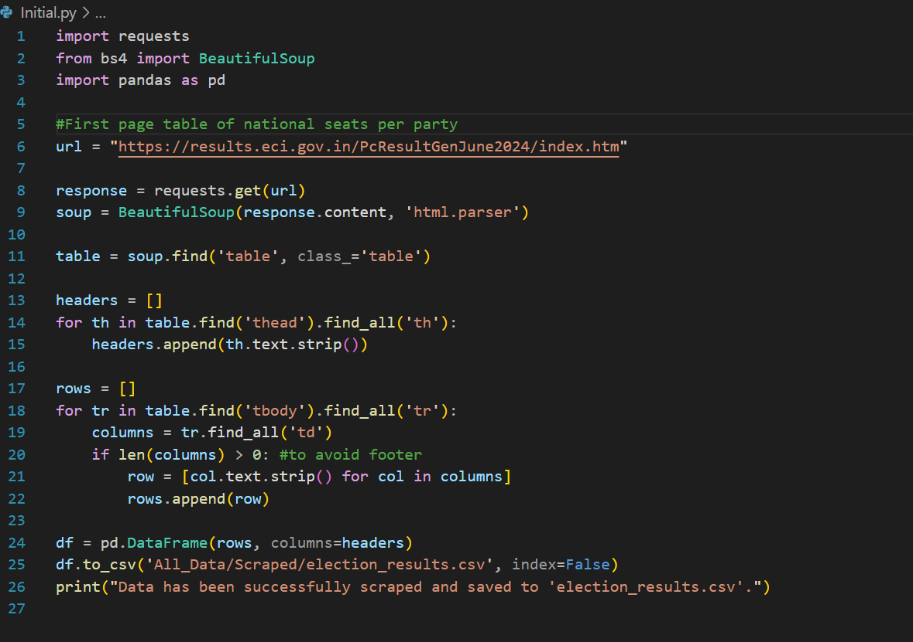
B) For seat distribution of every state, I had to automate the WebScraping behaviour. Using Selenium to mimic user interaction with the website, I had to select the states from the dropdown and scrape the table on the new website which is generated, and then return to the previous page again to select the next option and repeat the scraping process.
This Specific script can be found in "drop_down.py"
=> Here is a screenshot of the code: 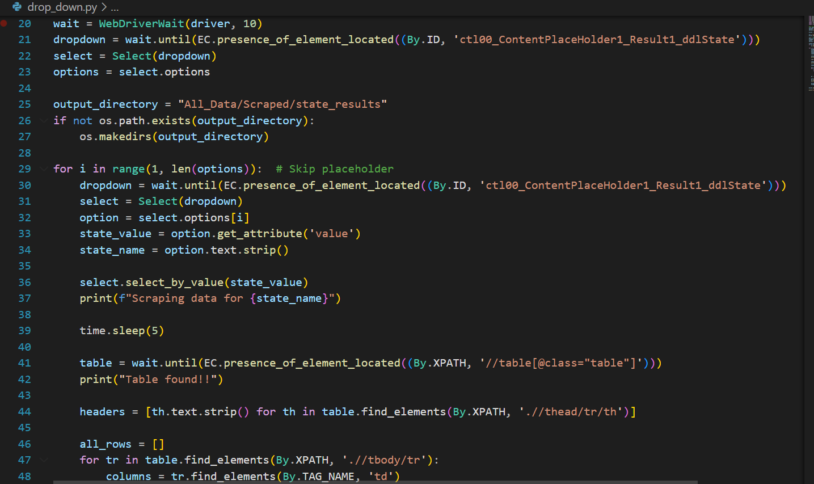
C) For every party in every state, I also scraped the details about which constituency the party has managed to secure a seat in, the candidate's name, the total votes he/she has received, and the margin of their votes. This was by far the toughest script I have written, due to loops, multiple go-back statements, and refetching due to StaleElement errors. It obviously required a lot of space and time. The script generates a directory of each state, along with individual csv files for each party.
The specific script can be found in the file "Next_scene.py"
=> Here is a screenshot of the code: 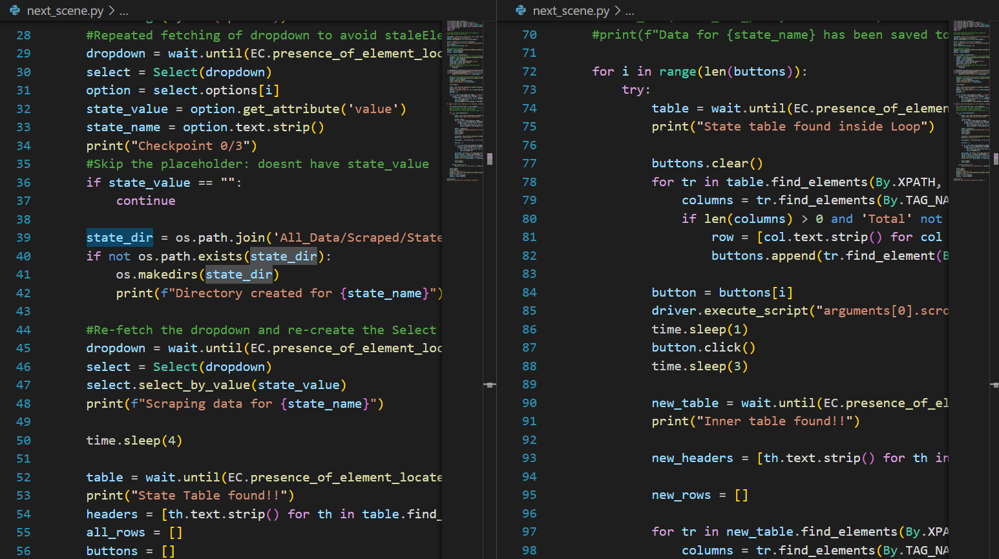
Step 2: Data Processing & Mining :-
A) Merging state-wise constituency winnings to create a consolidated list of all 543 constituencies, along with the following details :-
- State in which the constituency is situated.
- Candidate who has won.
- Party which the candidate belongs to.
- Total Votes received by the candidate.
- Majority voted by which he/she has won
The specific script can be found in the file "merge.py"
=> Here is a screenshot of the code:
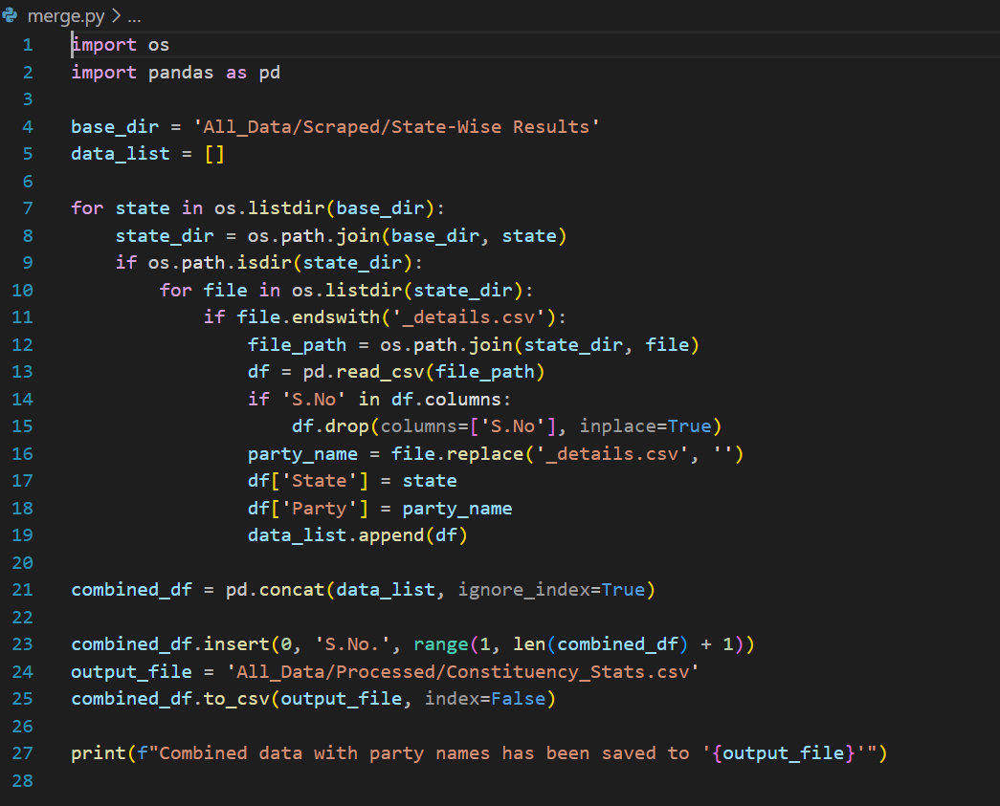
B) I also created a list containing parties who have gathered the most seats in every state.
This was imperative to visualize the majority in each state, and its effect on the
National Seat distribution.
The specific script can be found in the file "leading.py"
=> Here is a screenshot of the code:
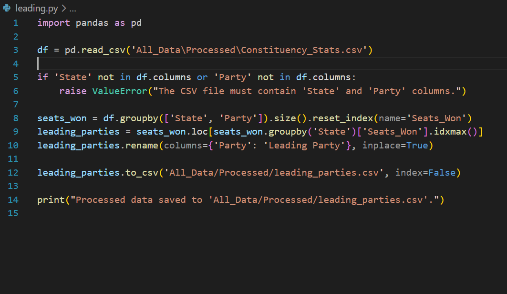
C) Finally, to see the Top performers in every state I made a script. Additionally, if there
are ties in the number of seats, then all parties with the same number of seats are included in the
file.
The specific script can be found in the file "State_competition.py"
=> Here is a screenshot of the code:
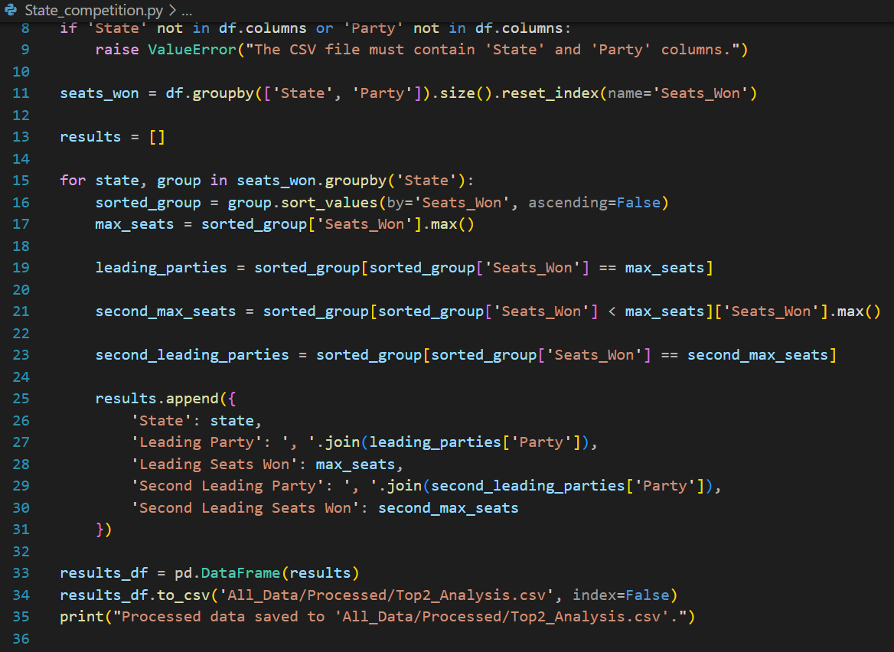
Step 3: Data Visualization :-
The scraped and processed data was used to visualize data using different charts.
Tableau was a really helpful tool in making interactive dashboards, and it made
uncovering insights very easy.
The visualizations are depicted in the Insights section of this report.
Insights Derived
Below is the Tableau Dashboard, which becomes our Primary Reference for all inferences we draw in this report.
Please refer to the paragraph below the visualization to know about the features in the dashboard.

The dashboard above has the following features:-
-
Party Stats- National/State :-
- Colour coded states corresponding to majority party.
- Hovering over each state highlights the name and seats won by the majority
Party in that state.
- Selecting a state in the map, leads to display of state stats in the heat
map below.
For Eg-: Try Clicking on any one state, and see the difference in the heat map below.
- Selecting a party on the legends provided also highlights the state in which the
respective party has a majority in.
-
Top/Lowest National Winners :-
- Displays Top 7 parties with highest Seat winnings.
- Also displays parties which have gathered 1 seat in total.
- Colour coded states corresponding to majority party.
- Hovering over each state highlights the name and seats won by the majority Party in that state.
- Selecting a state in the map, leads to display of state stats in the heat
map below.
For Eg-: Try Clicking on any one state, and see the difference in the heat map below. - Selecting a party on the legends provided also highlights the state in which the respective party has a majority in.
- Displays Top 7 parties with highest Seat winnings.
- Also displays parties which have gathered 1 seat in total.
Insight 1 :-
BJP has clear majority in 15 states/Union Territories.
BJP has thus managed to retain 44.2% seats in the Lok Sabha Elections 2024.
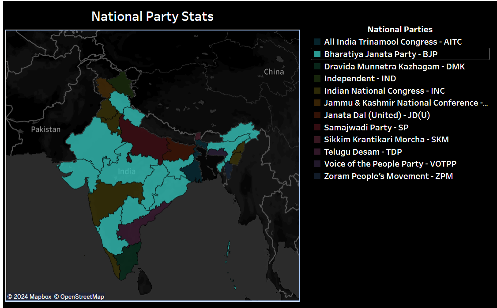
Insight 2 :-
Similarly, INC has majority in 8 states. Thus, INC has managed to procure 18.2% of the total
seats in this election.
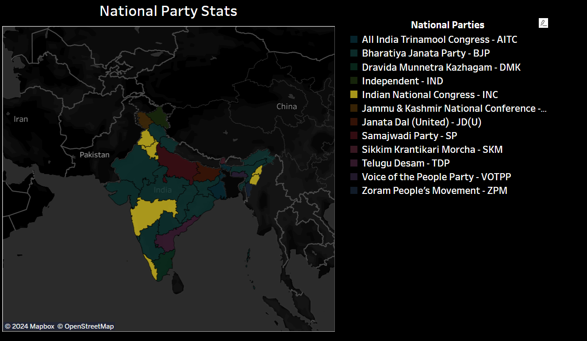
INC Has Total Majority in the following stats :-
- Nagaland
- Manipur
Insight 3 :-
INC has majority in 5 states, along with a tie in Haryana, Telangana and Goa with BJP.
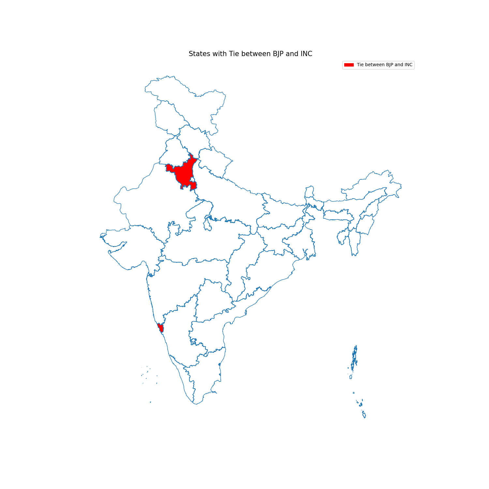
Insight 4 :-
The Top 7 Parties {Seat-Wise}, make for about 455 out of the total 543 seats in the Lok Sabha.
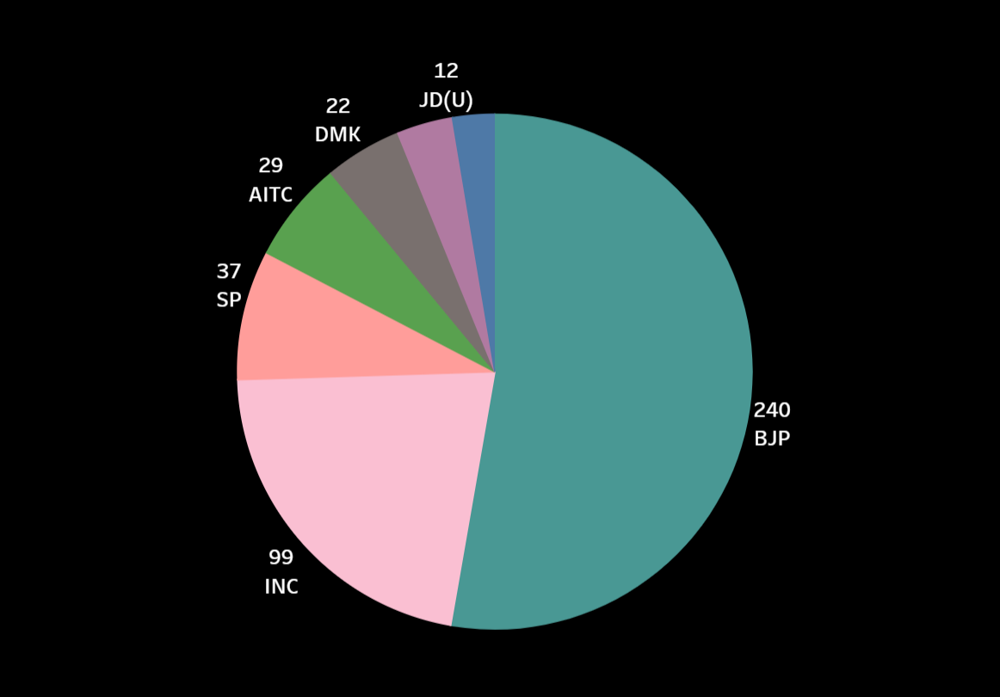
Insight 5 :-
17 parties have managed to secure only 1 seat. 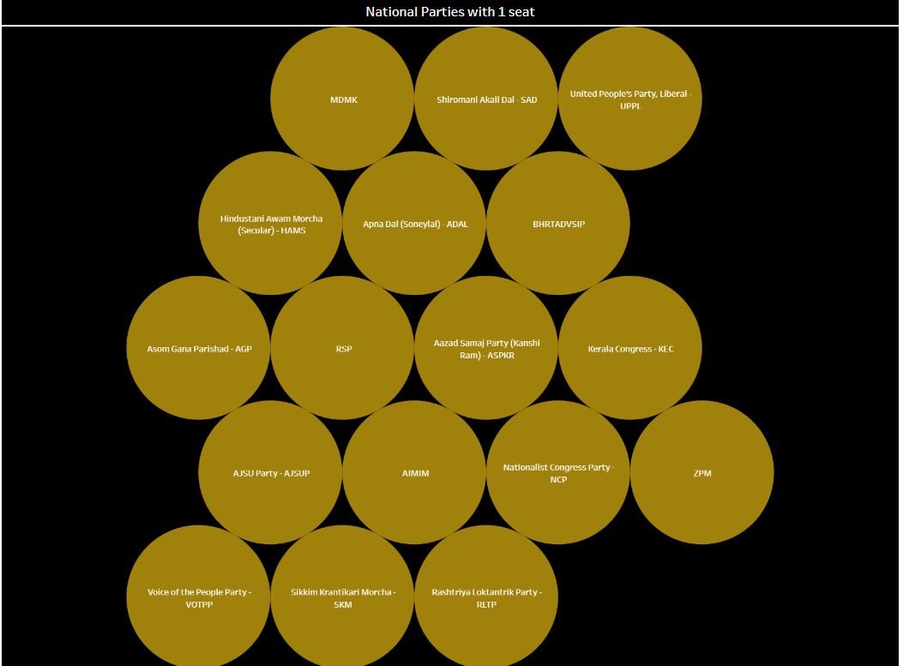
Insight 6 :-
The candidate Shankar Lalwani from BJP in the constituency Indore(26), state Madhya Pradesh won with the highest vote margin of 1175092 votes in the whole country.
The candidate Ravindra Dattaram Waikar from Shiv Sena - SHS in the constituency Mumbai North West (27), state Maharashtra won with the lowest vote margin of 48 votes in the whole country.
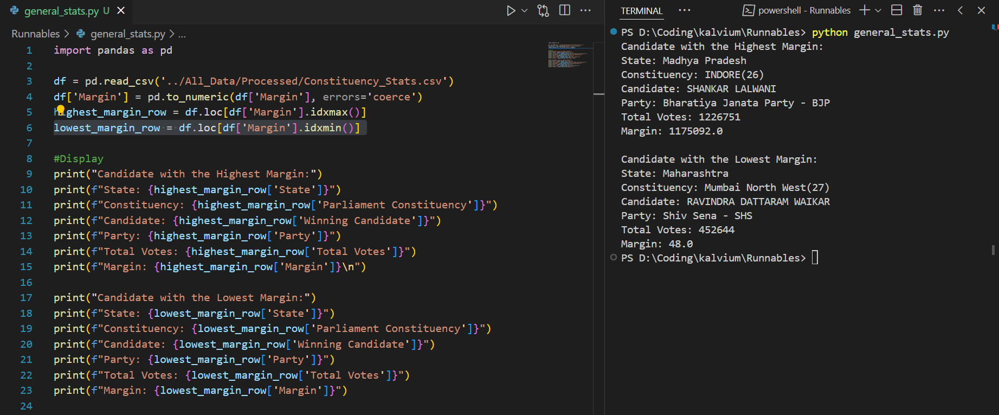
Insight 7 :-
BJP has Total Majority in the following states/UTs :-
- Madhya Pradesh
- Uttarakhand
- Himachal Pradesh
- Andaman & Nicobar Islands
- Delhi-NCT
- Arunachal Pradesh
- Tripura
Insight 8 :-
BJP has a huge majority in Gujarat, Odisha and Chattisgarh as well. But INC has managed to secure 1 seat in these states as well.
Insight 9 :-
With INC being the 2nd party with the most seats, it is followed by Samajwadi Party at
37 seats. This is approximately 62% lower than that of INC.
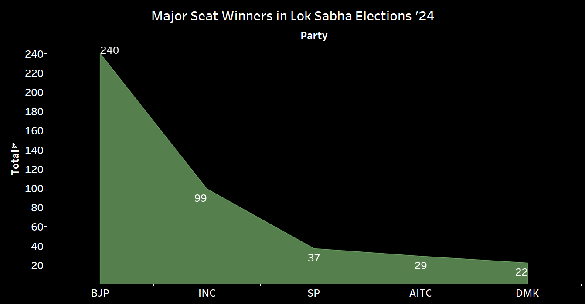
Insight 10 :-
Consider the Visualization below:
You can hover/select the states on the Map to get more information

Using the above Visualization, we can successfully derive two interesting points.
I] There are 6 states where BJP is leading, INC is second; with respect to the total seats
won in each state. Along with this, there are 3 states where BJP and INC are tied with equal
number of seats.
II] There are 5 states where INC has a majority.
=> Therefore, We can conclude that the Indian National Congress (INC) is not a secondary option to the Bharatiya Janata Party (BJP), as some might interpret. Instead, the INC is a significant contender in its own, gaining second position overall by winning in various constituencies.
Bonus Visualization
To visualize the Growth or Decline of a few National Parties, I made another visualization by comparing the Total Seats won in the Lok Sabha Elections of 2019 vs 2024. Some interesting trends were noticed, with some parties declining, and some parties growing from 0 seats in 2019 to 4 seats in 2024.
The following Visualization was made on Tableau as well.

Conclusion
Thus, we see the trends in the Lok Sabha Elections in the year 2024, and derive certain insights, with the help of interactive visualizations. The visualizations build in tableau are embedded to give users the ability to interact with the dashboard and understand the distribution of seats and votes in state, leading up to the national seat statistics.
This task thus, required the use of various tools, a comprehensive study of election results, and the structure of the ECI Website.
By leveraging advanced data processing and visualization techniques, this project aims to
provide a clear and insightful view of the electoral landscape, contributing valuable knowledge
to the field of political analysis and public awareness.
I am open to feedback and further discussions on how to
make my analysis better!